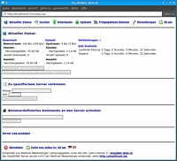

StealthNet
Archivierte Anleitung
Dieser Artikel wurde archiviert, da er - oder Teile daraus - nur noch unter einer älteren Ubuntu-Version nutzbar ist. Diese Anleitung wird vom Wiki-Team weder auf Richtigkeit überprüft noch anderweitig gepflegt. Zusätzlich wurde der Artikel für weitere Änderungen gesperrt.
Zum Verständnis dieses Artikels sind folgende Seiten hilfreich:
StealthNet  ist ein Filesharing-Client für das RShare-Netzwerk. Im Unterschied zu derzeit gängigen Netzwerken ist man hier weitestgehend anonym unterwegs. Die technischen Hintergründe werden in der Dokumentation erläutert. In diesem Artikel wird auch der Betrieb samt Web-UI
ist ein Filesharing-Client für das RShare-Netzwerk. Im Unterschied zu derzeit gängigen Netzwerken ist man hier weitestgehend anonym unterwegs. Die technischen Hintergründe werden in der Dokumentation erläutert. In diesem Artikel wird auch der Betrieb samt Web-UI  , also Steuerung per Browser, erklärt.
, also Steuerung per Browser, erklärt.
Installation¶
Es gibt mehrere Möglichkeiten StealthNet unter Ubuntu zu nutzen, als da wären die Benutzung der Windowsvariante mit Mono, die Benutzung über eine Weboberfläche im Browser oder die Benutzung der Linuxversion per Konsole.
StealthNet für Windows¶
Am besten funktioniert StealthNet (getestet mit Version 0.8.7.4) zusammen mit Mono 2.0. Daher müssen zunächst die entsprechenden Monopakete installiert werden [1].
mono-devel
libmono-corlib2.0-cil
libmono-system-runtime2.0-cil
libmono-winforms2.0-cil
Dann ist das StealthNet-Programm für Windows über die Downloadseite des Projekts herunterzuladen.
Hinweis!
Fremdsoftware kann das System gefährden.
Die heruntergeladene ZIP-Datei muss nun in einen beliebigen Ordner im Homeverzeichnis entpackt werden [2]. Zum Starten des Programms navigiert man in einem Terminal [3] zum gewählten Ordner und startet das Programm mit
mono StealthNet.exe
Stealthnet mit Web-UI¶
 Um SteahlthNet mit grafischer Oberfläche zur Verfügung zu haben, installiert man den Server samt Oberfläche per Java-Installer. Dieser kann von der Downloadseite heruntergeladen werden. Als Voraussetzung muss schon eine Java-Variante installiert sein. Alle weiteren Abhängigkeiten installiert der Installer dann automatisch über die Paketverwaltung [1].
Sollte der WebUI-Installer nicht starten, dann beim Download speichern wählen. Anschließend mit der rechten Maustaste auf die Datei klicken und im Fenster "Eigenschaften" wählen. Im Register "Zugriffsrechte" das Häckchen setzen bei "Datei als Programm ausführen". dannach schließen und erneut mit der rechten Maustaste öffnen und im Fenster Öffnen mit "OpenJDK Java" wählen. Abschließend den Installationsanweisungen folgen.
Stealthnet in der Konsole¶
Wer auf eine grafische Oberfläche verzichten kann, kann auf die Linux-Variante des in Mono programmierten StealthNet-Client zurückgreifen.
Folgende Abhängigkeiten müssen installiert sein [2]:
mono-devel
libmono-corlib2.0-cil
libmono-system-runtime2.0-cil
Paketliste zum Kopieren:
sudo apt-get install mono-devel libmono-corlib2.0-cil libmono-system-runtime2.0-cil
sudo aptitude install mono-devel libmono-corlib2.0-cil libmono-system-runtime2.0-cil
Der entpackte [3] StealthNet-Client kann über folgenden Befehl gestartet werden [4]:
mono StealthNet.exe
Über den Befehl help bekommt man nun eine Übersicht über alle Befehle des Konsolenprogramms.
Konfiguration¶
Die voreingestellte Netzwerkdirektive (Port 6097) sollte bei Verwendung eines Routers weitergeleitet werden.
Benutzung¶
Die Weboberfläche kann nach erfolgreicher Installation unter der Adresse http://localhost:8765/index.jsp mit einem Browser geöffnet werden. Die Bedienung der deutschsprachigen Oberfläche ist einfach und intuitiv, da sie sich an Oberflächen bekannter Filesharing-Programme orientiert.

- Erstellt mit Inyoka
-
 2004 – 2017 ubuntuusers.de • Einige Rechte vorbehalten
2004 – 2017 ubuntuusers.de • Einige Rechte vorbehalten
Lizenz • Kontakt • Datenschutz • Impressum • Serverstatus -
Serverhousing gespendet von